Another glorious cross-country drive as we head from Kaikoura to Punakaiki passing the quite extraordinary salt flats at Grasmere Salt Works where the sea evaporates leaving salt crystals behind. It looks as bright pink as these photos would indicate - but the crystals are bright white. We also visit the Punakaiki Cavern.
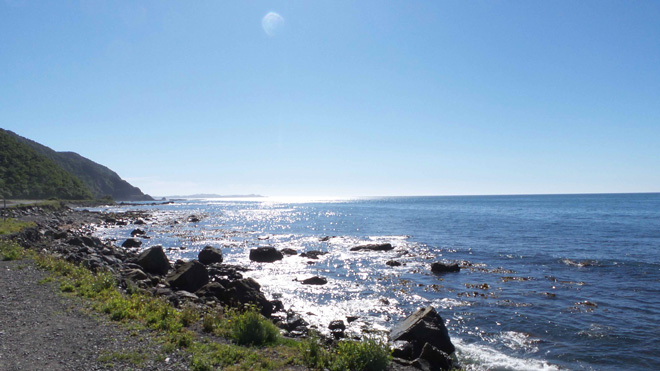
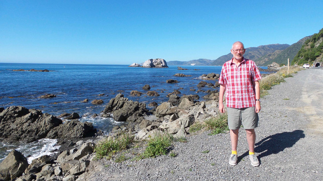
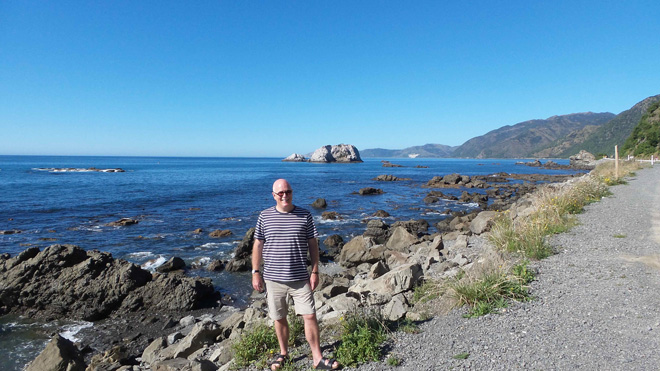
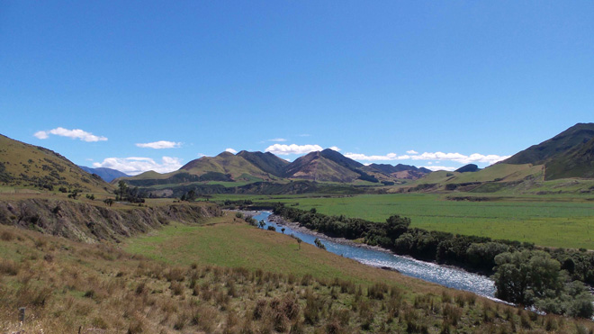
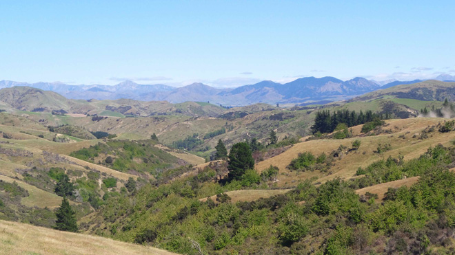
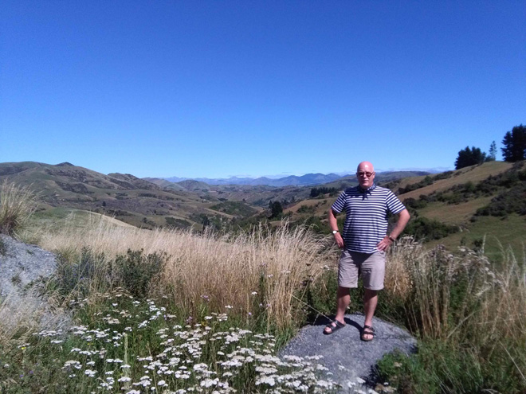
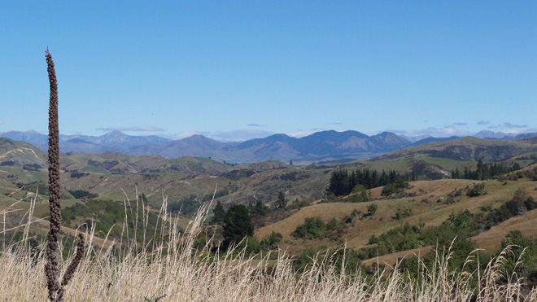
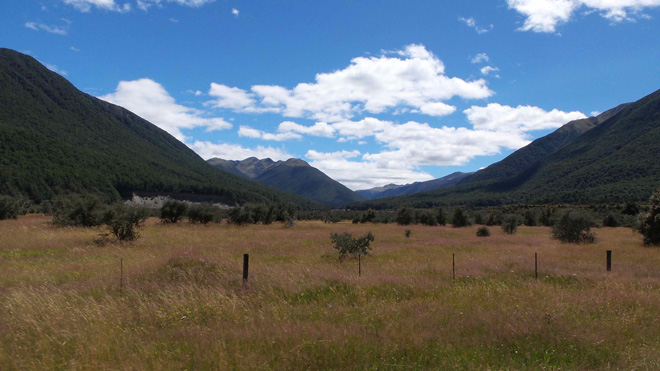
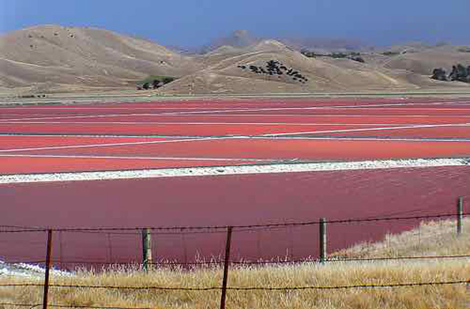
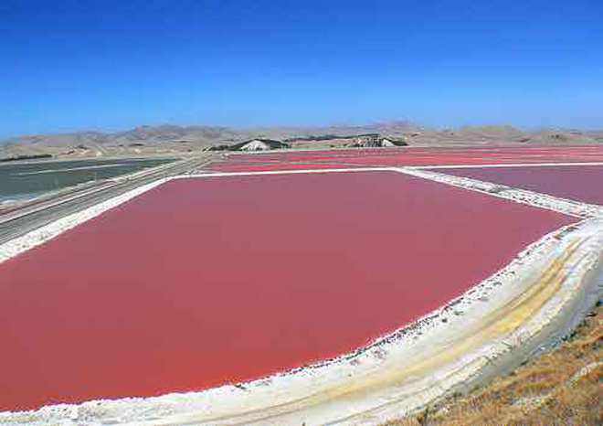
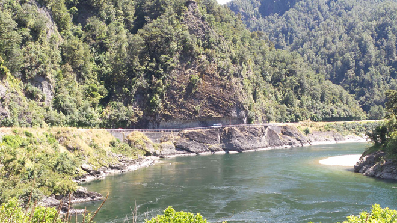
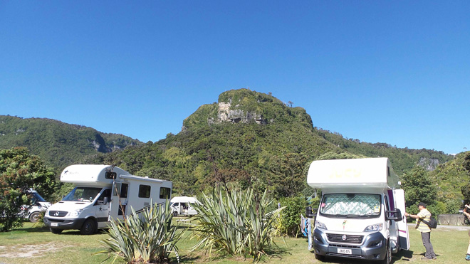
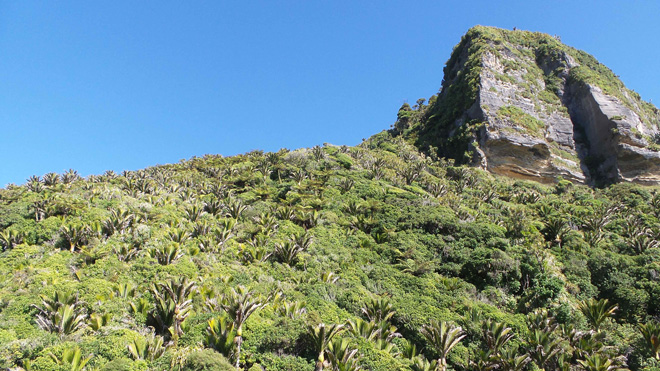
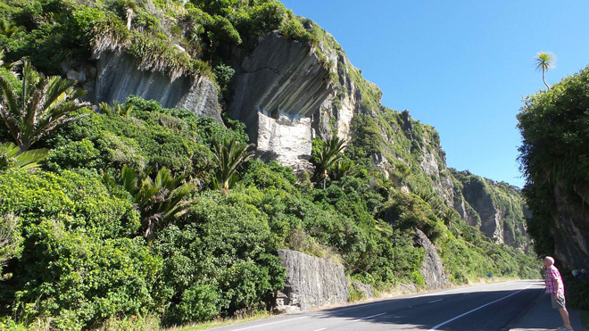
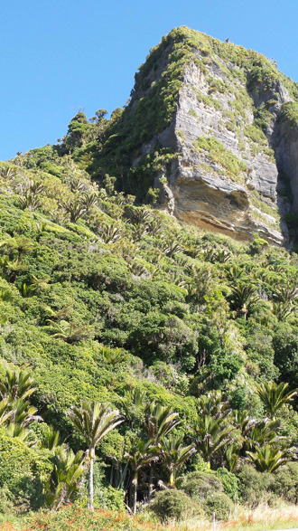
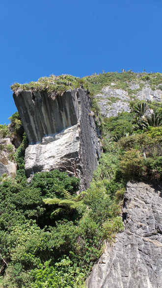
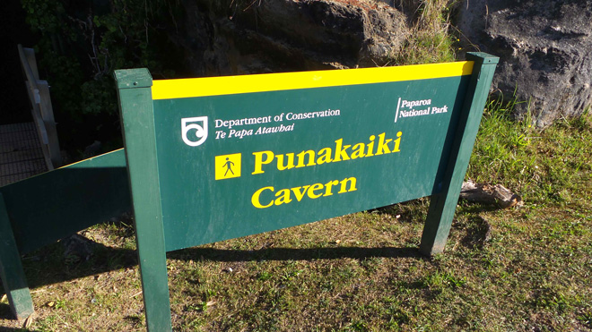
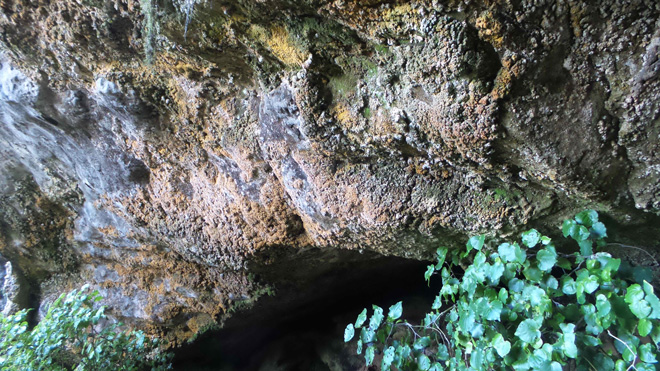
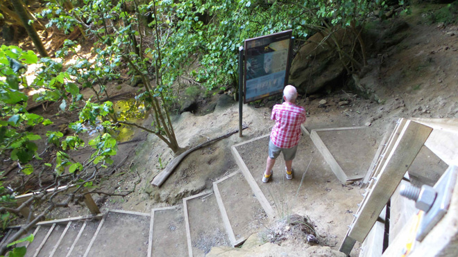
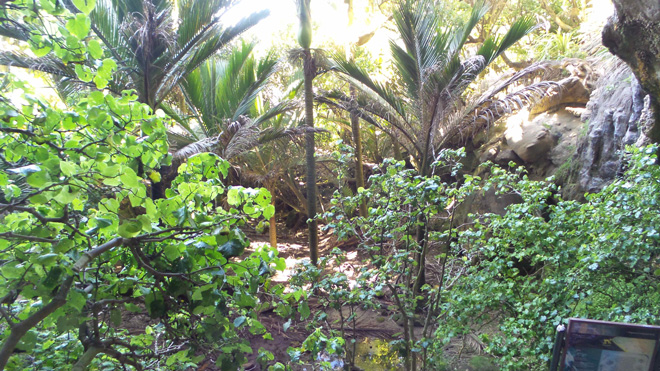